2023 Advanced Higher Physics marking instructions
Source: Scottish Qualifications Authority (SQA) / Qualifications Scotland. This is a StemInteract HTML companion, not an official HTML edition. Selectable text is supplied alongside original page images. Use the images or original PDF for equations, powers, fractions, vector notation, tables and diagrams; text extraction cannot fully preserve mathematical layout.
Jump to a question
PDF page 1
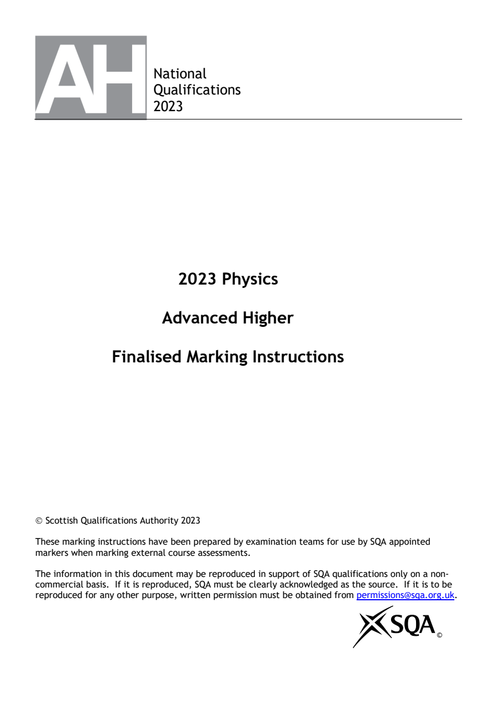
Selectable page text
National
Qualifications
2023
2023 Physics
Advanced Higher
Finalised Marking Instructions
Scottish Qualifications Authority 2023
These marking instructions have been prepared by examination teams for use by SQA appointed
markers when marking external course assessments.
The information in this document may be reproduced in support of SQA qualifications only on a non-
commercial basis. If it is reproduced, SQA must be clearly acknowledged as the source. If it is to be
reproduced for any other purpose, written permission must be obtained from permissions@sqa.org.uk.
©PDF page 2
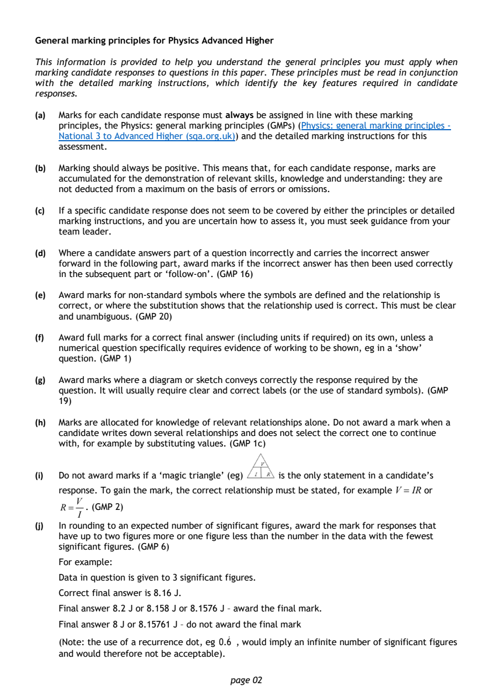
Selectable page text
General marking principles for Physics Advanced Higher
This information is provided to help you understand the general principles you must apply when
marking candidate responses to questions in this paper. These principles must be read in conjunction
with the detailed marking instructions, which identify the key features required in candidate
responses.
(a) Marks for each candidate response must always be assigned in line with these marking
principles, the Physics: general marking principles (GMPs) (Physics: general marking principles -
National 3 to Advanced Higher (sqa.org.uk)) and the detailed marking instructions for this
assessment.
(b) Marking should always be positive. This means that, for each candidate response, marks are
accumulated for the demonstration of relevant skills, knowledge and understanding: they are
not deducted from a maximum on the basis of errors or omissions.
(c) If a specific candidate response does not seem to be covered by either the principles or detailed
marking instructions, and you are uncertain how to assess it, you must seek guidance from your
team leader.
(d) Where a candidate answers part of a question incorrectly and carries the incorrect answer
forward in the following part, award marks if the incorrect answer has then been used correctly
in the subsequent part or ‘follow-on’. (GMP 16)
(e) Award marks for non-standard symbols where the symbols are defined and the relationship is
correct, or where the substitution shows that the relationship used is correct. This must be clear
and unambiguous. (GMP 20)
(f) Award full marks for a correct final answer (including units if required) on its own, unless a
numerical question specifically requires evidence of working to be shown, eg in a ‘show’
question. (GMP 1)
(g) Award marks where a diagram or sketch conveys correctly the response required by the
question. It will usually require clear and correct labels (or the use of standard symbols). (GMP
19)
(h) Marks are allocated for knowledge of relevant relationships alone. Do not award a mark when a
candidate writes down several relationships and does not select the correct one to continue
with, for example by substituting values. (GMP 1c)
(i) Do not award marks if a ‘magic triangle’ (eg) is the only statement in a candidate’s
response. To gain the mark, the correct relationship must be stated, for example V = IR or
V
R= . (GMP 2)
I
(j) In rounding to an expected number of significant figures, award the mark for responses that
have up to two figures more or one figure less than the number in the data with the fewest
significant figures. (GMP 6)
For example:
Data in question is given to 3 significant figures.
Correct final answer is 8.16 J.
Final answer 8.2 J or 8.158 J or 8.1576 J – award the final mark.
Final answer 8 J or 8.15761 J – do not award the final mark
(Note: the use of a recurrence dot, eg 0.6 , would imply an infinite number of significant figures
and would therefore not be acceptable).
page 02PDF page 3
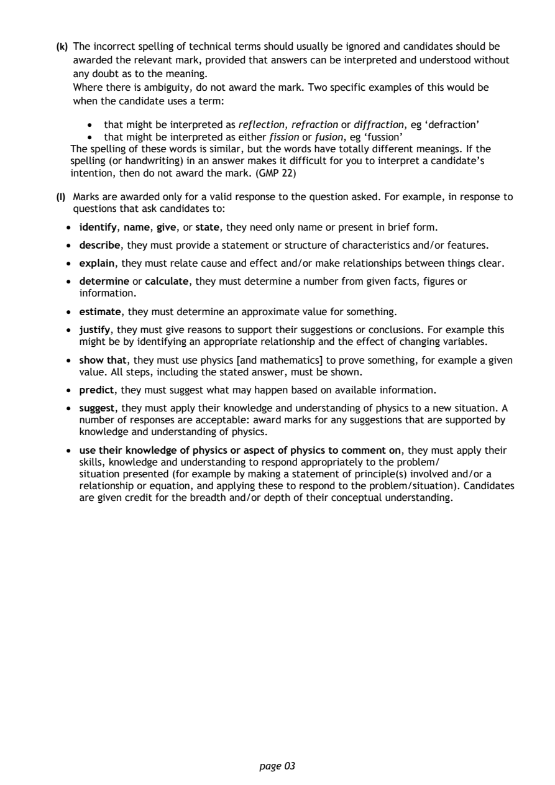
Selectable page text
(k) The incorrect spelling of technical terms should usually be ignored and candidates should be
awarded the relevant mark, provided that answers can be interpreted and understood without
any doubt as to the meaning.
Where there is ambiguity, do not award the mark. Two specific examples of this would be
when the candidate uses a term:
• that might be interpreted as reflection, refraction or diffraction, eg ‘defraction’
• that might be interpreted as either fission or fusion, eg ‘fussion’
The spelling of these words is similar, but the words have totally different meanings. If the
spelling (or handwriting) in an answer makes it difficult for you to interpret a candidate’s
intention, then do not award the mark. (GMP 22)
(l) Marks are awarded only for a valid response to the question asked. For example, in response to
questions that ask candidates to:
• identify, name, give, or state, they need only name or present in brief form.
• describe, they must provide a statement or structure of characteristics and/or features.
• explain, they must relate cause and effect and/or make relationships between things clear.
• determine or calculate, they must determine a number from given facts, figures or
information.
• estimate, they must determine an approximate value for something.
• justify, they must give reasons to support their suggestions or conclusions. For example this
might be by identifying an appropriate relationship and the effect of changing variables.
• show that, they must use physics [and mathematics] to prove something, for example a given
value. All steps, including the stated answer, must be shown.
• predict, they must suggest what may happen based on available information.
• suggest, they must apply their knowledge and understanding of physics to a new situation. A
number of responses are acceptable: award marks for any suggestions that are supported by
knowledge and understanding of physics.
• use their knowledge of physics or aspect of physics to comment on, they must apply their
skills, knowledge and understanding to respond appropriately to the problem/
situation presented (for example by making a statement of principle(s) involved and/or a
relationship or equation, and applying these to respond to the problem/situation). Candidates
are given credit for the breadth and/or depth of their conceptual understanding.
page 03PDF page 4
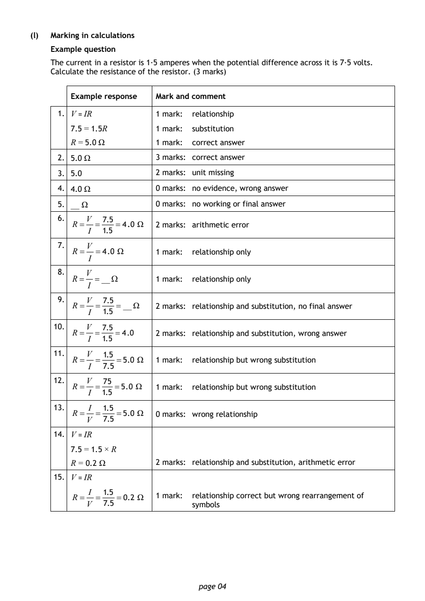
Selectable page text
(l) Marking in calculations
Example question
The current in a resistor is 1·5 amperes when the potential difference across it is 7·5 volts.
Calculate the resistance of the resistor. (3 marks)
Example response Mark and comment
1. V = IR 1 mark: relationship
7.5 = 1.5R 1 mark: substitution
R = 5.0 Ω 1 mark: correct answer
2. 5.0 Ω 3 marks: correct answer
3. 5.0 2 marks: unit missing
4. 4.0 Ω 0 marks: no evidence, wrong answer
5. __ Ω 0 marks: no working or final answer
6. V 7.5
R= = =4.0 Ω 2 marks: arithmetic error
I 1.5
7. V
R = =4.0 Ω 1 mark: relationship only
I
8. V
R= = __Ω 1 mark: relationship only
I
9. V 7.5
R= = = __Ω 2 marks: relationship and substitution, no final answer
I 1.5
10. V 7.5
R= = =4.0 2 marks: relationship and substitution, wrong answer
I 1.5
11. V 1.5
R = = =5.0 Ω 1 mark: relationship but wrong substitution
I 7.5
12. V 75
R= = =5.0 Ω 1 mark: relationship but wrong substitution
I 1.5
13. I 1.5
R = = =5.0 Ω 0 marks: wrong relationship
V 7.5
14. V = IR
7.5 = 1.5 × R
R = 0.2 Ω 2 marks: relationship and substitution, arithmetic error
15. V = IR
I 1.5
R = = =0.2 Ω 1 mark: relationship correct but wrong rearrangement of
V 7.5 symbols
page 04PDF page 5
Question 1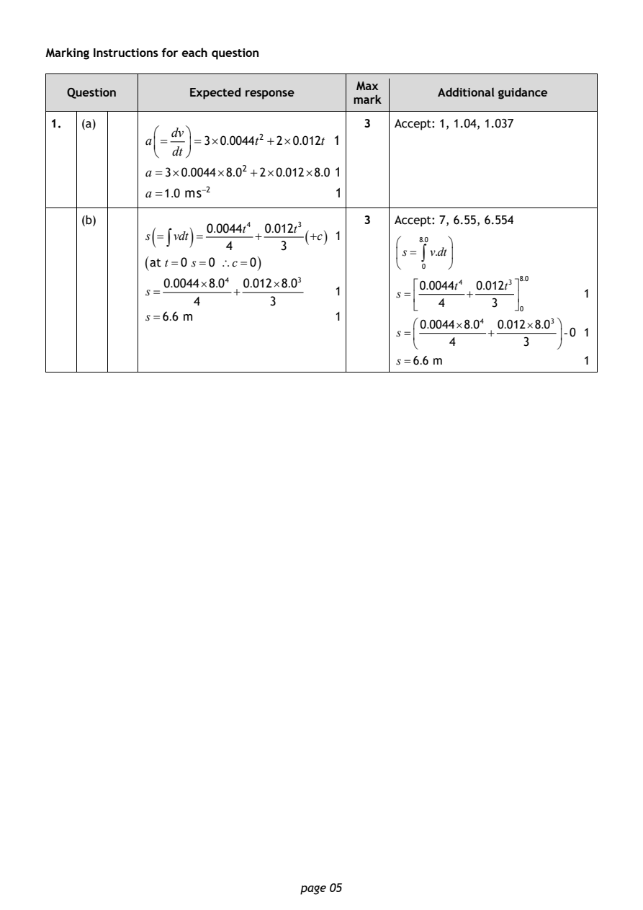
Selectable page text
Marking Instructions for each question
Max
Question Expected response Additional guidance
mark
1. (a) 3 Accept: 1, 1.04, 1.037
dv
a = =3×0.0044t² +2×0.012t 1
dt
a=3×0.0044×8.0² +2×0.012×8.0 1
a=1.0 ms⁻² 1
(b) 3 Accept: 7, 6.55, 6.554
( ) 0.0044t⁴ 0.012t³
s =∫vdt = + (+c) 1
4 3
s=⁸∫^{.}⁰v.dt
(at t =0 s=0 ∴c=0)
0
0.0044×8.0⁴ 0.012×8.0³ 0.0044t⁴ 0.012t³⁸^{.}⁰
s= + 1 s= + 1
4 3 4 3
0
s=6.6 m 1
0.0044×8.0⁴ 0.012×8.0³
s= + -0 1
4 3
s=6.6 m 1
page 05PDF page 6
Question 2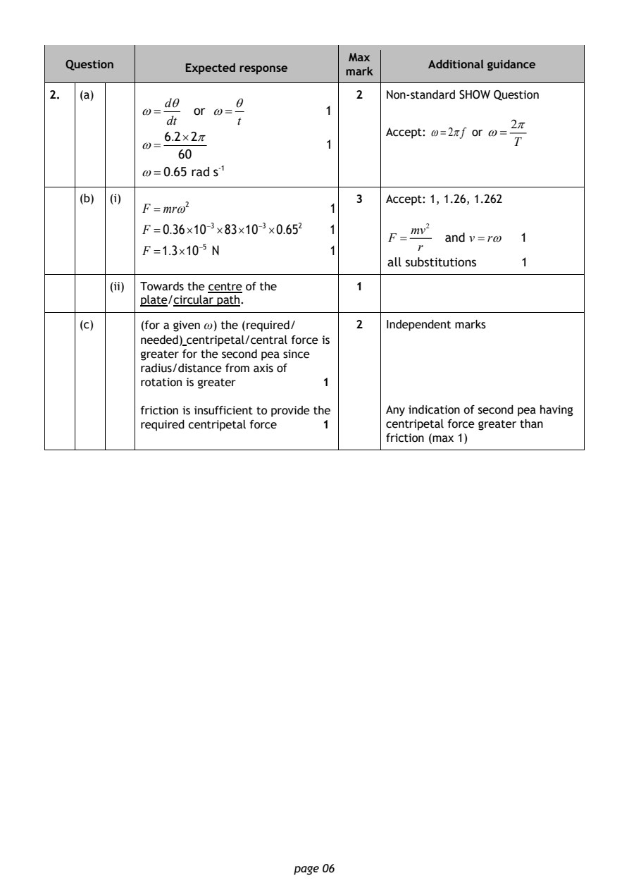
Selectable page text
Max
Question Expected response Additional guidance
mark
2. (a) 2 Non-standard SHOW Question
dθ θ
ω= or ω= 1
dt t 2π
Accept: ω=2πf or ω=
6.2×2π
ω= 1 T
60
ω=0.65 rad s⁻¹
(b) (i) 3 Accept: 1, 1.26, 1.262
F =mrω² 1
F =0.36×10⁻³×83×10⁻³×0.65² 1 mv²
F = and v=rω 1
F =1.3×10⁻⁵ N 1 r
all substitutions 1
(ii) Towards the centre of the 1
plate/circular path.
(c) (for a given ω) the (required/ 2 Independent marks
needed) centripetal/central force is
greater for the second pea since
radius/distance from axis of
rotation is greater 1
friction is insufficient to provide the Any indication of second pea having
required centripetal force 1 centripetal force greater than
friction (max 1)
page 06PDF page 7
Question 3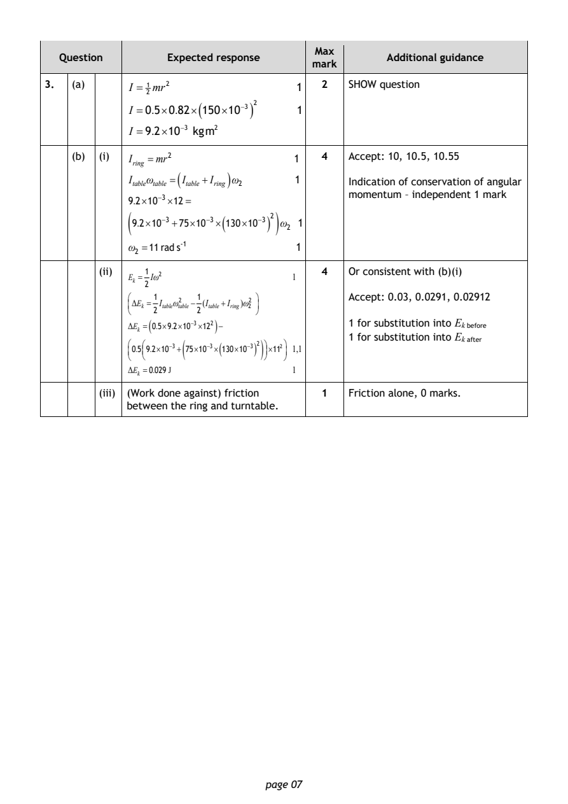
Selectable page text
Max
Question Expected response Additional guidance
mark
3. (a) I = ₂¹mr² 1 2 SHOW question
( )
I =0.5×0.82× 150×10⁻³ ² 1
I =9.2×10⁻³ kgm²
(b) (i) Iᵣᵢₙ_{g} =mr² 1 4 Accept: 10, 10.5, 10.55
( )
Iₜₐ_{b}ₗₑωₜₐ_{b}ₗₑ = Iₜₐ_{b}ₗₑ+Iᵣᵢₙ_{g} ω₂ 1 Indication of conservation of angular
momentum – independent 1 mark
9.2×10⁻³×12=
( )
( )
9.2×10⁻³+75×10⁻³× 130×10⁻³ ² ω₂ 1
ω₂ =11 rads⁻¹ 1
(ii) 1 4 Or consistent with (b)(i)
Eₖ = Iω² 1
2
1 1 Accept: 0.03, 0.0291, 0.02912
ΔEₖ = Iₜₐ_{b}ₗₑωₜ²ₐ_{b}ₗₑ− (Iₜₐ_{b}ₗₑ+Iᵣᵢₙ_{g})ω₂²
2 2
ΔEₖ = ( 0.5×9.2×10⁻³×12² ) − 1 for substitution into Eₖ re
1 for substitution into Eₖ^{b}^{e}^{f}^{o}
( ( ) ) after
0.59.2×10⁻³+ 75×10⁻³× 130×10⁻³ ² ×11² 1,1
ΔEₖ =0.029 J 1
(iii) (Work done against) friction 1 Friction alone, 0 marks.
between the ring and turntable.
page 07PDF page 8
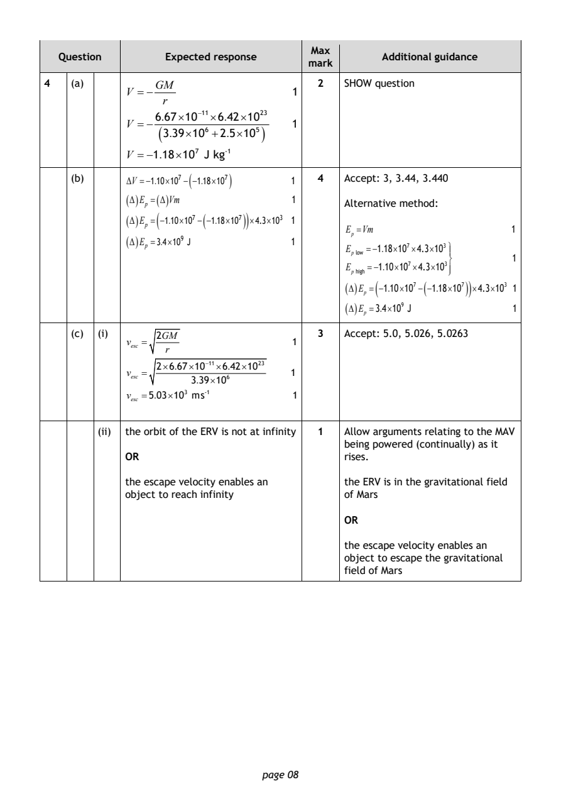
Selectable page text
Max
Question Expected response Additional guidance
mark
4 (a) GM 2 SHOW question
V =− 1
r
6.67×10⁻¹¹×6.42×10²³
V =− 1
( )
3.39×10⁶ +2.5×10⁵
V =−1.18×10⁷ J kg⁻¹
(b) ΔV =−1.10×10⁷− ( −1.18×10⁷ ) 1 4 Accept: 3, 3.44, 3.440
(Δ)Eₚ =(Δ)Vm 1
Alternative method:
(Δ)Eₚ = ( −1.10×10⁷− ( −1.18×10⁷ )) ×4.3×10³ 1
Eₚ =Vm 1
(Δ)Eₚ =3.4×10⁹ J 1
Eₚₗₒ_{w} =−1.18×10⁷×4.3×10³
1
Eₚ ₕᵢ_{g}ₕ=−1.10×10⁷×4.3×10³
(∆)Eₚ = ( −1.10×10⁷− ( −1.18×10⁷ )) ×4.3×10³ 1
(∆)Eₚ =3.4×10⁹ J 1
(c) (i) 2GM 3 Accept: 5.0, 5.026, 5.0263
vₑₛ_{c} = 1
r
2×6.67×10⁻¹¹×6.42×10²³
vₑₛ_{c} = 1
3.39×10⁶
vₑₛ_{c} =5.03×10³ ms⁻¹ 1
(ii) the orbit of the ERV is not at infinity 1 Allow arguments relating to the MAV
being powered (continually) as it
OR rises.
the escape velocity enables an the ERV is in the gravitational field
object to reach infinity of Mars
OR
the escape velocity enables an
object to escape the gravitational
field of Mars
page 08PDF page 9
Question 4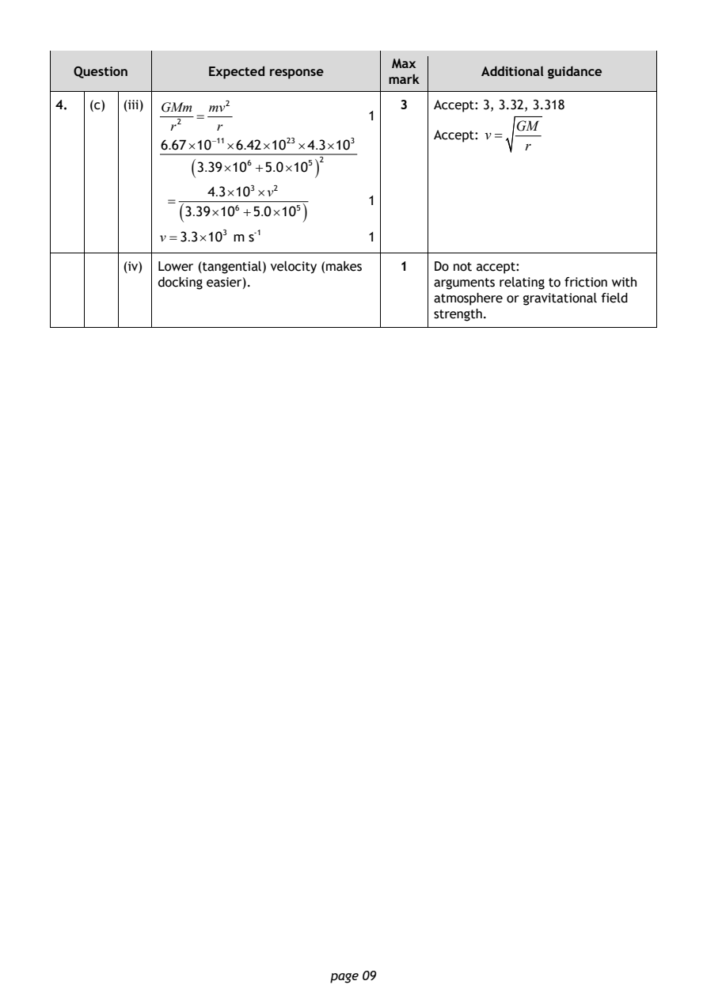
Selectable page text
Max
Question Expected response Additional guidance
mark
4. (c) (iii) GMm mv² 3 Accept: 3, 3.32, 3.318
= 1
r² r GM
Accept: v=
6.67×10⁻¹¹×6.42×10²³×4.3×10³ r
( )
3.39×10⁶ +5.0×10⁵ ²
4.3×10³×v²
= 1
( )
3.39×10⁶ +5.0×10⁵
v=3.3×10³ m s⁻¹ 1
(iv) Lower (tangential) velocity (makes 1 Do not accept:
docking easier). arguments relating to friction with
atmosphere or gravitational field
strength.
page 09PDF page 10
Question 5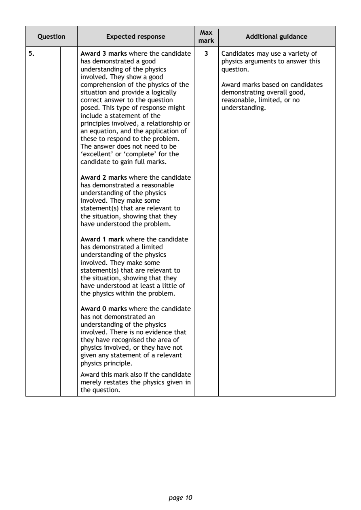
Selectable page text
Max
Question Expected response Additional guidance
mark
5. Award 3 marks where the candidate 3 Candidates may use a variety of
has demonstrated a good physics arguments to answer this
understanding of the physics question.
involved. They show a good
comprehension of the physics of the Award marks based on candidates
situation and provide a logically demonstrating overall good,
correct answer to the question reasonable, limited, or no
posed. This type of response might understanding.
include a statement of the
principles involved, a relationship or
an equation, and the application of
these to respond to the problem.
The answer does not need to be
‘excellent’ or ‘complete’ for the
candidate to gain full marks.
Award 2 marks where the candidate
has demonstrated a reasonable
understanding of the physics
involved. They make some
statement(s) that are relevant to
the situation, showing that they
have understood the problem.
Award 1 mark where the candidate
has demonstrated a limited
understanding of the physics
involved. They make some
statement(s) that are relevant to
the situation, showing that they
have understood at least a little of
the physics within the problem.
Award 0 marks where the candidate
has not demonstrated an
understanding of the physics
involved. There is no evidence that
they have recognised the area of
physics involved, or they have not
given any statement of a relevant
physics principle.
Award this mark also if the candidate
merely restates the physics given in
the question.
page 10PDF page 11
Question 6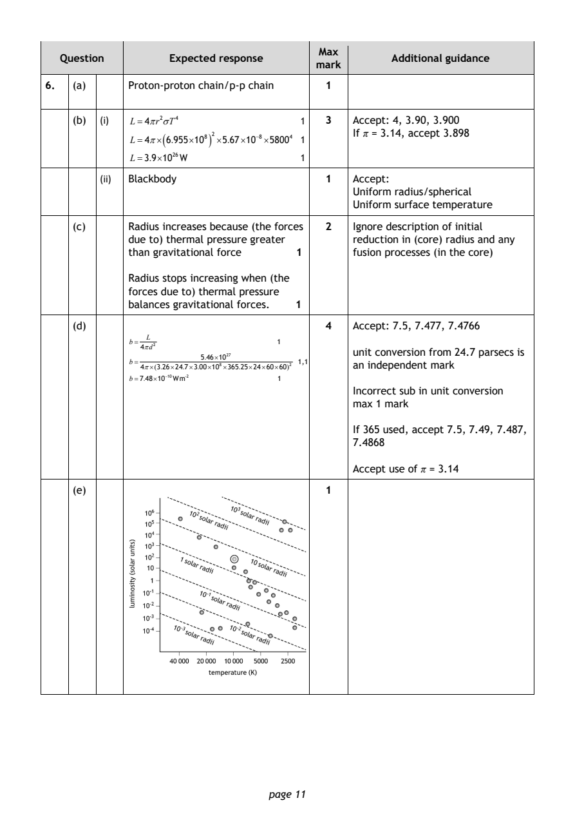
Selectable page text
Max
Question Expected response Additional guidance
mark
6. (a) Proton-proton chain/p-p chain 1
(b) (i) L=4πr²σT⁴ 1 3 Accept: 4, 3.90, 3.900
( ) If π = 3.14, accept 3.898
L=4π× 6.955×10⁸ ²×5.67×10⁻⁸×5800⁴ 1
L=3.9×10²⁶W 1
(ii) Blackbody 1 Accept:
Uniform radius/spherical
Uniform surface temperature
(c) Radius increases because (the forces 2 Ignore description of initial
due to) thermal pressure greater reduction in (core) radius and any
than gravitational force 1 fusion processes (in the core)
Radius stops increasing when (the
forces due to) thermal pressure
balances gravitational forces. 1
(d) 4 Accept: 7.5, 7.477, 7.4766
L
b= 1
4πd²
unit conversion from 24.7 parsecs is
5.46×10²⁷
b= 1,1 an independent mark
4π×(3.26×24.7×3.00×10⁸×365.25×24×60×60)²
b=7.48×10⁻¹⁰Wm⁻² 1
Incorrect sub in unit conversion
max 1 mark
If 365 used, accept 7.5, 7.49, 7.487,
7.4868
Accept use of π = 3.14
(e) 1
page 11PDF page 12
Question 7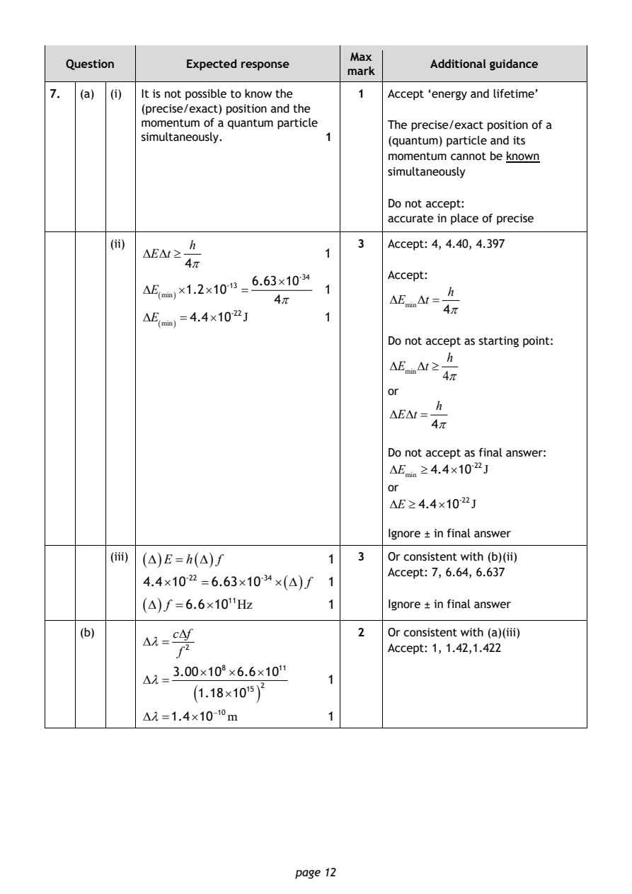
Selectable page text
Max
Question Expected response Additional guidance
mark
7. (a) (i) It is not possible to know the 1 Accept ‘energy and lifetime’
(precise/exact) position and the
momentum of a quantum particle The precise/exact position of a
simultaneously. 1
(quantum) particle and its
momentum cannot be known
simultaneously
Do not accept:
accurate in place of precise
(ii) h 3 Accept: 4, 4.40, 4.397
∆E∆t ≥ 1
4π
Accept:
6.63×10⁻³⁴
∆E₍ₘᵢₙ₎×1.2×10⁻¹³ = 1 h
4π ∆Eₘᵢₙ∆t =
4π
∆E₍ₘᵢₙ₎ =4.4×10⁻²²J 1
Do not accept as starting point:
h
∆Eₘᵢₙ∆t ≥
4π
or
h
∆E∆t =
4π
Do not accept as final answer:
∆Eₘᵢₙ ≥4.4×10⁻²²J
or
∆E ≥4.4×10⁻²²J
Ignore ± in final answer
(iii) (∆) E =h (∆) f 1 3 Or consistent with (b)(ii)
Accept: 7, 6.64, 6.637
4.4×10⁻²² =6.63×10⁻³⁴×(∆) f 1
(∆) f =6.6×10¹¹Hz 1 Ignore ± in final answer
(b) c∆f 2 Or consistent with (a)(iii)
∆λ=
f ² Accept: 1, 1.42,1.422
3.00×10⁸×6.6×10¹¹
∆λ= 1
( )
1.18×10¹⁵ ²
∆λ=1.4×10⁻¹⁰m 1
page 12PDF page 13
Question 8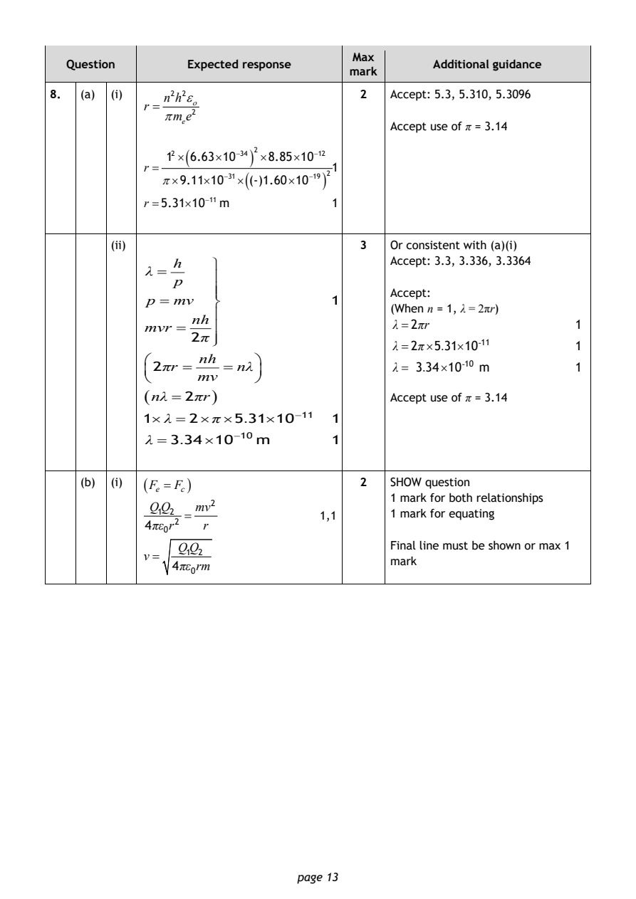
Selectable page text
Max
Question Expected response Additional guidance
mark
8. (a) (i) n²h²ε_{ο} 2 Accept: 5.3, 5.310, 5.3096
r =
πmₑe²
Accept use of π = 3.14
( )
1²× 6.63×10⁻³⁴ ²×8.85×10⁻¹²
r = 1
π×9.11×10⁻³¹×
(
(-)1.60×10⁻¹⁹
)
²
r =5.31×10⁻¹¹m 1
(ii) 3 Or consistent with (a)(i)
h Accept: 3.3, 3.336, 3.3364
λ =
p
Accept:
p = mv 1
(When n = 1, λ = 2πr)
nh
mvr = λ=2πr 1
2π
λ=2π×5.31×10⁻¹¹ 1
nh
2πr = = nλ λ= 3.34×10⁻¹⁰ m 1
mv
( nλ = 2πr ) Accept use of π = 3.14
1× λ = 2×π×5.31×10⁻¹¹ 1
λ = 3.34×10⁻¹⁰ m 1
(b) (i) ( Fₑ = F_{c} ) 2 SHOW question
1 mark for both relationships
Q₁Q₂ mv²
= 1,1 1 mark for equating
4πε₀r² r
Q₁Q₂ Final line must be shown or max 1
v=
4πε₀rm
mark
page 13PDF page 14
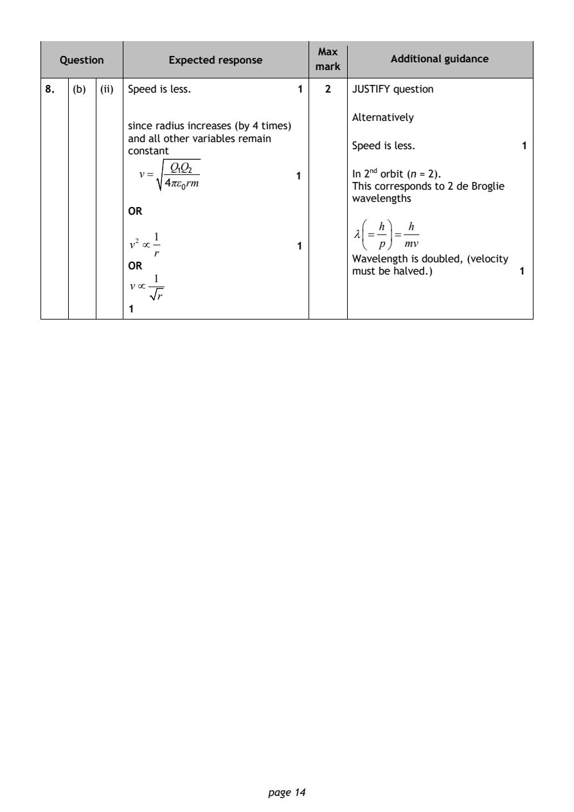
Selectable page text
Max
Question Expected response Additional guidance
mark
8. (b) (ii) Speed is less. 1 2 JUSTIFY question
Alternatively
since radius increases (by 4 times)
and all other variables remain
Speed is less. 1
constant
Q₁Q₂
v= 1 In 2ⁿ^{d} orbit (n = 2).
4πε₀rm
This corresponds to 2 de Broglie
wavelengths
OR
h h
λ = =
1
v² ∝ 1 p mv
r
Wavelength is doubled, (velocity
OR
must be halved.) 1
1
v∝
r
1
page 14PDF page 15
Question 9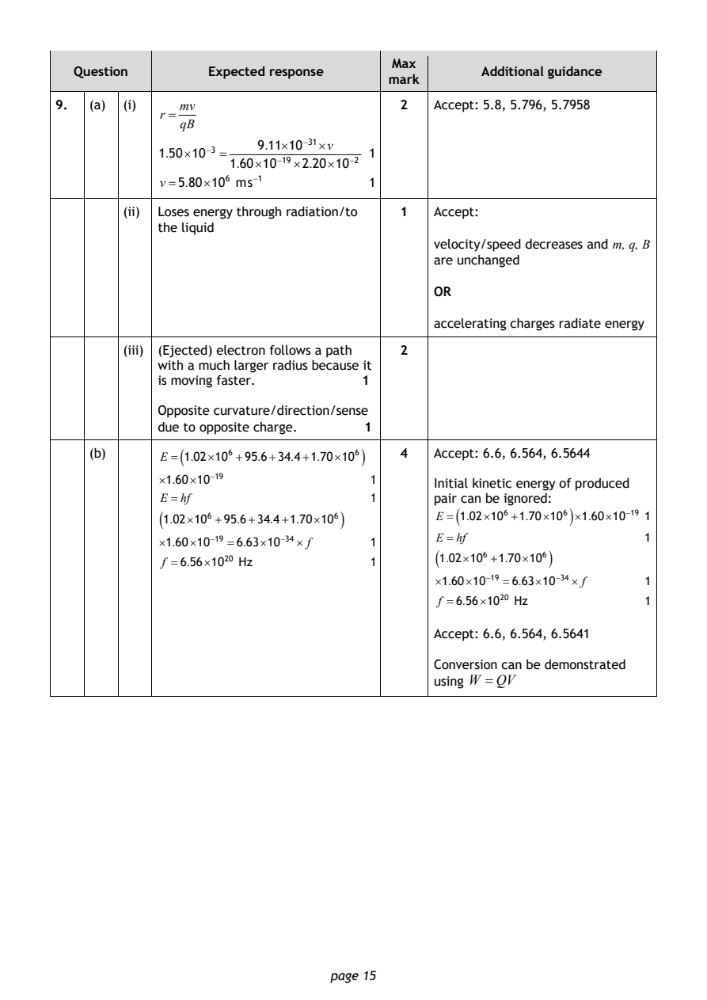
Selectable page text
Max
Question Expected response Additional guidance
mark
9. (a) (i) mv 2 Accept: 5.8, 5.796, 5.7958
r =
qB
9.11×10⁻³¹×v
1.50×10⁻³ = 1
1.60×10⁻¹⁹×2.20×10⁻²
v=5.80×10⁶ ms⁻¹ 1
(ii) Loses energy through radiation/to 1 Accept:
the liquid
velocity/speed decreases and m, q, B
are unchanged
OR
accelerating charges radiate energy
(iii) (Ejected) electron follows a path 2
with a much larger radius because it
is moving faster. 1
Opposite curvature/direction/sense
due to opposite charge. 1
(b) E= ( 1.02×10⁶+95.6+34.4+1.70×10⁶ ) 4 Accept: 6.6, 6.564, 6.5644
×1.60×10⁻¹⁹ 1 Initial kinetic energy of produced
E=hf 1 pair can be ignored:
( 1.02×10⁶+95.6+34.4+1.70×10⁶ ) E= ( 1.02×10⁶+1.70×10⁶ ) ×1.60×10⁻¹⁹ 1
E=hf 1
×1.60×10⁻¹⁹ =6.63×10⁻³⁴× f 1
( )
f =6.56×10²⁰ Hz 1
1.02×10⁶+1.70×10⁶
×1.60×10⁻¹⁹ =6.63×10⁻³⁴× f 1
f =6.56×10²⁰ Hz 1
Accept: 6.6, 6.564, 6.5641
Conversion can be demonstrated
using W =QV
page 15PDF page 16
Question 10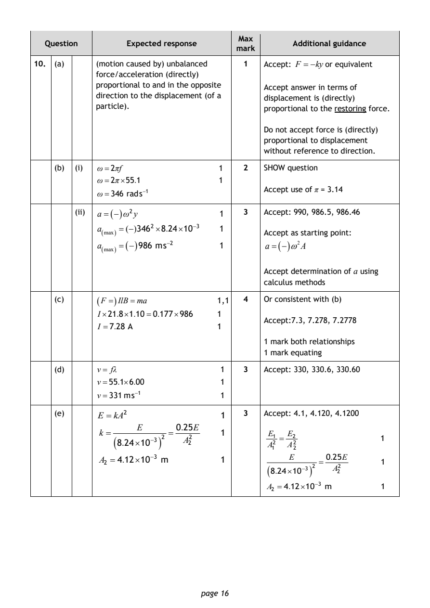
Selectable page text
Max
Question Expected response Additional guidance
mark
10. (a) (motion caused by) unbalanced 1 Accept: F =−kyor equivalent
force/acceleration (directly)
proportional to and in the opposite Accept answer in terms of
direction to the displacement (of a displacement is (directly)
particle). proportional to the restoring force.
Do not accept force is (directly)
proportional to displacement
without reference to direction.
(b) (i) ω=2πf 1 2 SHOW question
ω=2π×55.1 1
Accept use of π = 3.14
ω=346 rads⁻¹
(ii) a =(−) ω²y 1 3 Accept: 990, 986.5, 986.46
a ₘₐₓ =(−)346²×8.24×10⁻³ 1
( ) Accept as starting point:
a ₘₐₓ =(−)986 ms⁻² 1 a=(−)ω2A
( )
Accept determination of a using
calculus methods
(c) (F =)IlB=ma 1,1 4 Or consistent with (b)
I×21.8×1.10=0.177×986 1
Accept:7.3, 7.278, 7.2778
I =7.28 A 1
1 mark both relationships
1 mark equating
(d) v= fλ 1 3 Accept: 330, 330.6, 330.60
v=55.1×6.00 1
v=331 ms⁻¹ 1
(e) E = kA² 1 3 Accept: 4.1, 4.120, 4.1200
E 0.25E
k = = 1 E₁ E₂
( 8.24×10⁻³ ) ² A₂²
A²
=
A²₂
1
1
A₂ =4.12×10⁻³ m 1 E
=
0.25E
1
( 8.24×10⁻³ ) ² A₂²
A₂ =4.12×10⁻³ m 1
page 16PDF page 17
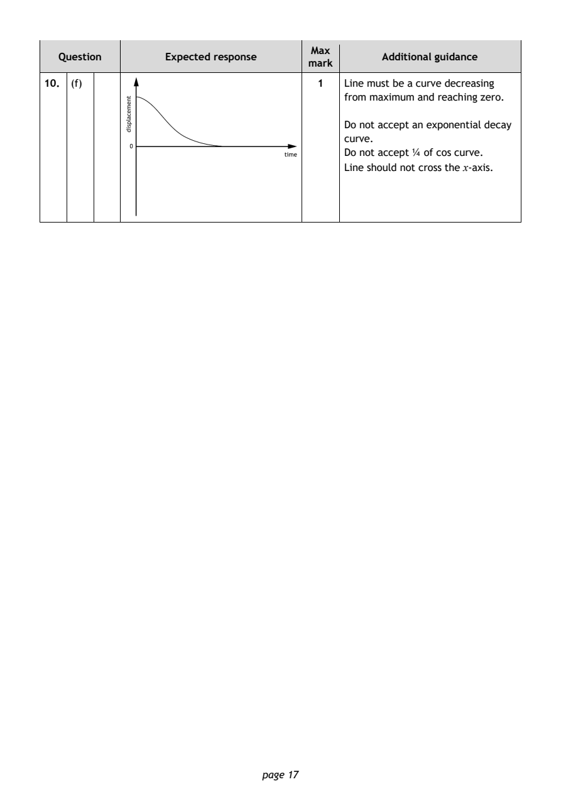
Selectable page text
Max
Question Expected response Additional guidance
mark
10. (f) 1 Line must be a curve decreasing
from maximum and reaching zero.
Do not accept an exponential decay
curve.
Do not accept ¼ of cos curve.
Line should not cross the x-axis.
page 17PDF page 18
Question 11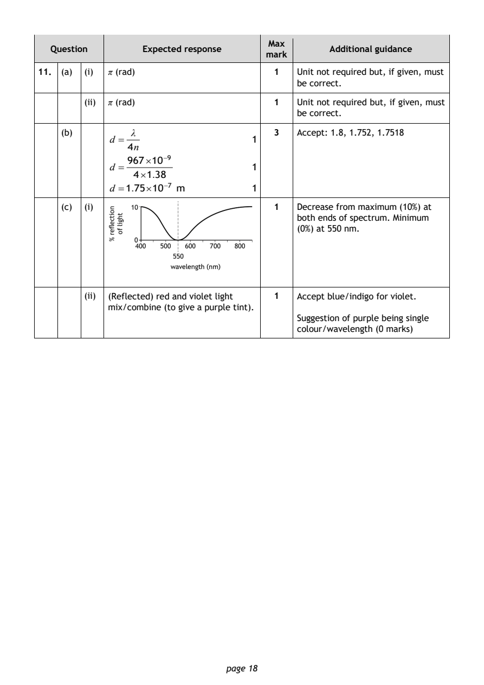
Selectable page text
Max
Question Expected response Additional guidance
mark
11. (a) (i) π (rad) 1 Unit not required but, if given, must
be correct.
(ii) π (rad) 1 Unit not required but, if given, must
be correct.
(b) λ 3 Accept: 1.8, 1.752, 1.7518
d = 1
4n
967×10⁻⁹
d = 1
4×1.38
d =1.75×10⁻⁷ m 1
(c) (i) 1 Decrease from maximum (10%) at
both ends of spectrum. Minimum
(0%) at 550 nm.
(ii) (Reflected) red and violet light 1 Accept blue/indigo for violet.
mix/combine (to give a purple tint).
Suggestion of purple being single
colour/wavelength (0 marks)
page 18PDF page 19
Question 12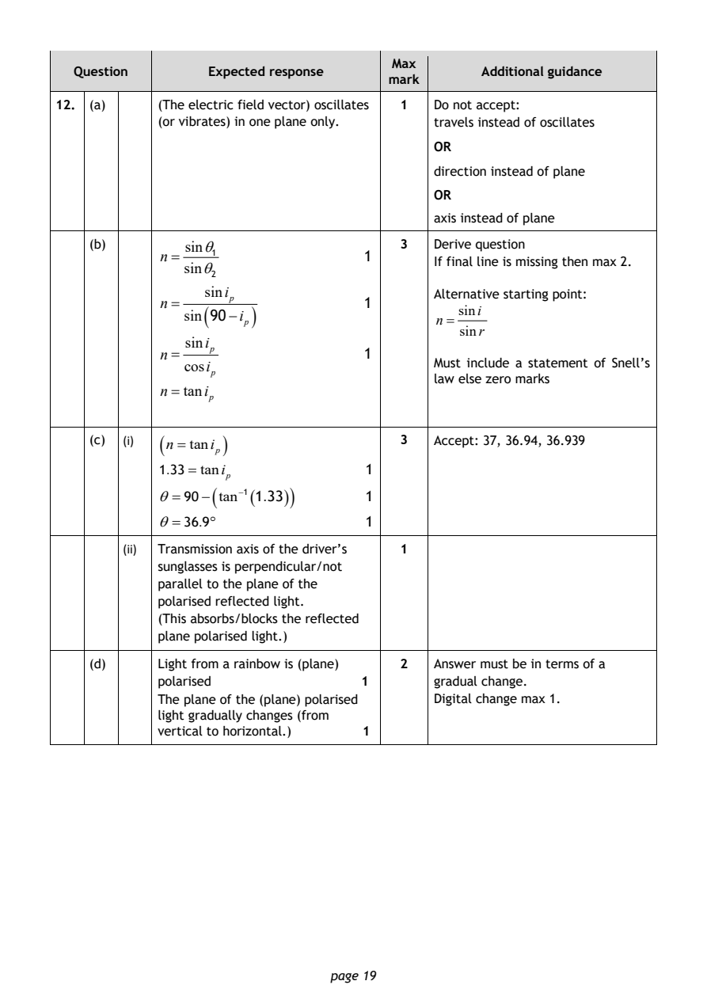
Selectable page text
Max
Question Expected response Additional guidance
mark
12. (a) (The electric field vector) oscillates 1 Do not accept:
(or vibrates) in one plane only. travels instead of oscillates
OR
direction instead of plane
OR
axis instead of plane
(b) sinθ₁ 3 Derive question
n = 1
If final line is missing then max 2.
sinθ₂
siniₚ Alternative starting point:
n = 1
sin ( 90−iₚ ) n= sini
sinr
siniₚ
n= 1
cosiₚ Must include a statement of Snell’s
law else zero marks
n= taniₚ
(c) (i) ( n = taniₚ ) 3 Accept: 37, 36.94, 36.939
1.33= taniₚ 1
θ=90−
(
tan⁻¹
(1.33))
1
θ=36.9° 1
(ii) Transmission axis of the driver’s 1
sunglasses is perpendicular/not
parallel to the plane of the
polarised reflected light.
(This absorbs/blocks the reflected
plane polarised light.)
(d) Light from a rainbow is (plane) 2 Answer must be in terms of a
polarised 1 gradual change.
The plane of the (plane) polarised Digital change max 1.
light gradually changes (from
vertical to horizontal.) 1
page 19PDF page 20
Question 13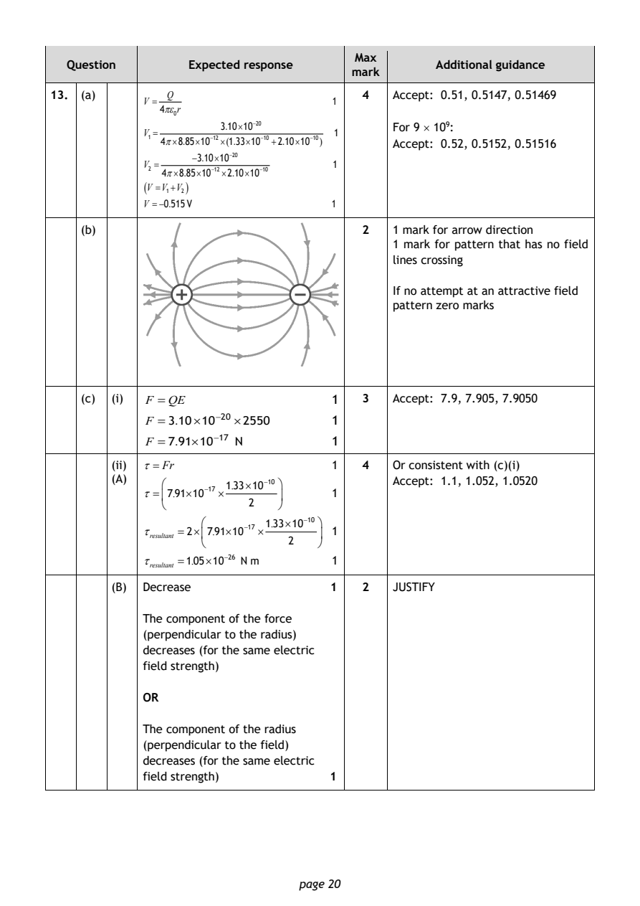
Selectable page text
Max
Question Expected response Additional guidance
mark
13. (a) Q 4 Accept: 0.51, 0.5147, 0.51469
V = 1
4πε₀r
3.10×10⁻²⁰ For 9 × 10⁹:
V₁= 1
4π×8.85×10⁻¹²×(1.33×10⁻¹⁰+2.10×10⁻¹⁰) Accept: 0.52, 0.5152, 0.51516
−3.10×10⁻²⁰
V₂= 1
4π×8.85×10⁻¹²×2.10×10⁻¹⁰
(V =V₁+V₂)
V =−0.515V 1
(b) 2 1 mark for arrow direction
1 mark for pattern that has no field
lines crossing
If no attempt at an attractive field
pattern zero marks
(c) (i) F =QE 1 3 Accept: 7.9, 7.905, 7.9050
F =3.10×10⁻²⁰×2550 1
F =7.91×10⁻¹⁷ N 1
(ii) τ=Fr 1 4 Or consistent with (c)(i)
(A) 1.33×10⁻¹⁰ Accept: 1.1, 1.052, 1.0520
τ=7.91×10⁻¹⁷× 1
2
1.33×10⁻¹⁰
τₑₛᵤₗₜₐₙ =2×7.91×10⁻¹⁷× 1
r t 2
τₑₛᵤₗₜₐₙ =1.05×10⁻²⁶ N m 1
r t
(B) Decrease 1 2 JUSTIFY
The component of the force
(perpendicular to the radius)
decreases (for the same electric
field strength)
OR
The component of the radius
(perpendicular to the field)
decreases (for the same electric
field strength) 1
page 20PDF page 21
Question 14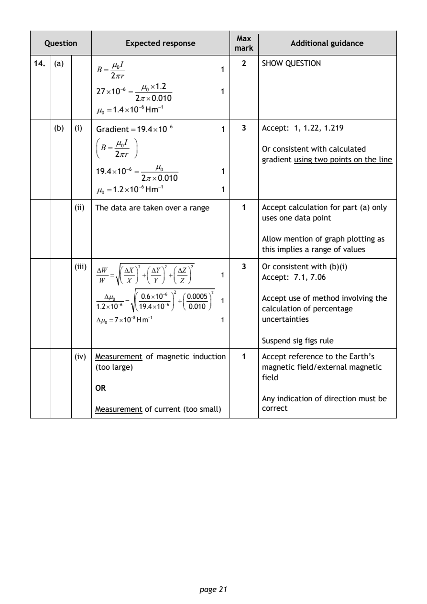
Selectable page text
Max
Question Expected response Additional guidance
mark
14. (a) µI 2 SHOW QUESTION
B= 1
2π⁰r
µ ×1.2
27×10⁻⁶ = 1
2π⁰×0.010
µ =1.4×10⁻⁶Hm⁻¹
0
(b) (i) Gradient=19.4×10⁻⁶ 1 3 Accept: 1, 1.22, 1.219
µI
B= Or consistent with calculated
2π⁰r
gradient using two points on the line
µ
19.4×10⁻⁶ = 1
2π×0⁰.010
µ =1.2×10⁻⁶Hm⁻¹ 1
0
(ii) The data are taken over a range 1 Accept calculation for part (a) only
uses one data point
Allow mention of graph plotting as
this implies a range of values
(iii) 3 Or consistent with (b)(i)
∆W ∆X ² ∆Y ² ∆Z²
= + + 1 Accept: 7.1, 7.06
W X Y Z
∆µ 0.6×10⁻⁶ ² 0.0005² Accept use of method involving the
= + 1
1.2×1⁰0⁻⁶ 19.4×10⁻⁶ 0.010 calculation of percentage
∆µ =7×10⁻⁸Hm⁻¹ 1 uncertainties
0
Suspend sig figs rule
(iv) Measurement of magnetic induction 1 Accept reference to the Earth’s
(too large) magnetic field/external magnetic
field
OR
Any indication of direction must be
Measurement of current (too small) correct
page 21PDF page 22
Question 15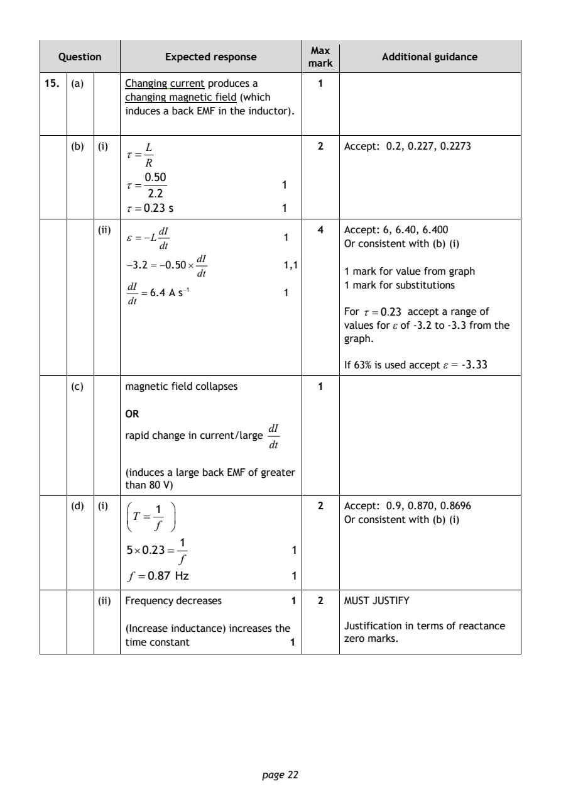
Selectable page text
Max
Question Expected response Additional guidance
mark
15. (a) Changing current produces a 1
changing magnetic field (which
induces a back EMF in the inductor).
(b) (i) L 2 Accept: 0.2, 0.227, 0.2273
τ=
R
0.50
τ= 1
2.2
τ=0.23 s 1
(ii) dI 4 Accept: 6, 6.40, 6.400
ε= −L 1
dt Or consistent with (b) (i)
dI
−3.2 = −0.50× 1,1
dt 1 mark for value from graph
dI 1 mark for substitutions
=6.4 A s⁻¹ 1
dt
For τ=0.23 accept a range of
values for ε of -3.2 to -3.3 from the
graph.
If 63% is used accept ε = -3.33
(c) magnetic field collapses 1
OR
dI
rapid change in current/large
dt
(induces a large back EMF of greater
than 80 V)
(d) (i) 1 2 Accept: 0.9, 0.870, 0.8696
T = Or consistent with (b) (i)
f
1
5×0.23= 1
f
f =0.87 Hz 1
(ii) Frequency decreases 1 2 MUST JUSTIFY
(Increase inductance) increases the Justification in terms of reactance
zero marks.
time constant 1
page 22PDF page 23
Question 16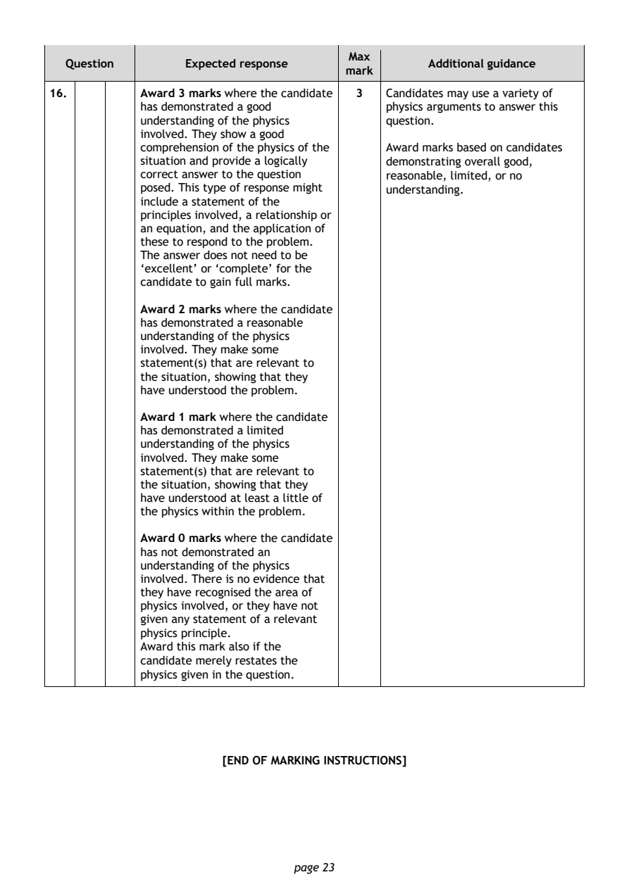
Selectable page text
Max
Question Expected response Additional guidance
mark
16. Award 3 marks where the candidate 3 Candidates may use a variety of
has demonstrated a good physics arguments to answer this
understanding of the physics question.
involved. They show a good
comprehension of the physics of the Award marks based on candidates
situation and provide a logically demonstrating overall good,
correct answer to the question reasonable, limited, or no
posed. This type of response might understanding.
include a statement of the
principles involved, a relationship or
an equation, and the application of
these to respond to the problem.
The answer does not need to be
‘excellent’ or ‘complete’ for the
candidate to gain full marks.
Award 2 marks where the candidate
has demonstrated a reasonable
understanding of the physics
involved. They make some
statement(s) that are relevant to
the situation, showing that they
have understood the problem.
Award 1 mark where the candidate
has demonstrated a limited
understanding of the physics
involved. They make some
statement(s) that are relevant to
the situation, showing that they
have understood at least a little of
the physics within the problem.
Award 0 marks where the candidate
has not demonstrated an
understanding of the physics
involved. There is no evidence that
they have recognised the area of
physics involved, or they have not
given any statement of a relevant
physics principle.
Award this mark also if the
candidate merely restates the
physics given in the question.
[END OF MARKING INSTRUCTIONS]
page 23